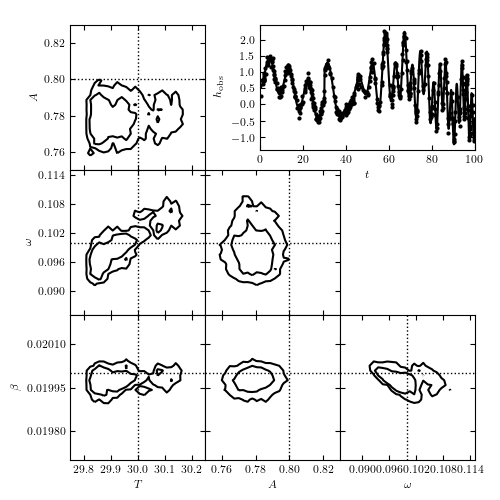

Matched Filter Burst Search¶
@pickle_results: computing results and saving to 'matchedfilt_chirp2.pkl'
[ 0% ]
[ 0% ] 100 of 30000 complete
[ 1% ] 200 of 30000 complete
[ 1% ] 300 of 30000 complete
[ 1% ] 400 of 30000 complete
[* 2% ] 500 of 30000 complete
[* 2% ] 600 of 30000 complete
[* 2% ] 700 of 30000 complete
[* 3% ] 800 of 30000 complete
[* 3% ] 900 of 30000 complete
[* 3% ] 1000 of 30000 complete
[** 4% ] 1100 of 30000 complete
[** 4% ] 1200 of 30000 complete
[** 4% ] 1300 of 30000 complete
[** 5% ] 1400 of 30000 complete
[** 5% ] 1500 of 30000 complete
[** 5% ] 1600 of 30000 complete
[** 6% ] 1700 of 30000 complete
[** 6% ] 1800 of 30000 complete
[** 6% ] 1900 of 30000 complete
[*** 7% ] 2000 of 30000 complete
[*** 7% ] 2100 of 30000 complete
[*** 7% ] 2200 of 30000 complete
[*** 8% ] 2300 of 30000 complete
[*** 8% ] 2400 of 30000 complete
[*** 8% ] 2500 of 30000 complete
[*** 9% ] 2600 of 30000 complete
[*** 9% ] 2700 of 30000 complete
[*** 9% ] 2800 of 30000 complete
[**** 10% ] 2900 of 30000 complete
[**** 10% ] 3000 of 30000 complete
[**** 10% ] 3100 of 30000 complete
[**** 11% ] 3200 of 30000 complete
[**** 11% ] 3300 of 30000 complete
[**** 11% ] 3400 of 30000 complete
[***** 12% ] 3500 of 30000 complete
[***** 12% ] 3600 of 30000 complete
[***** 12% ] 3700 of 30000 complete
[***** 13% ] 3800 of 30000 complete
[***** 13% ] 3900 of 30000 complete
[***** 13% ] 4000 of 30000 complete
[***** 14% ] 4100 of 30000 complete
[***** 14% ] 4200 of 30000 complete
[***** 14% ] 4300 of 30000 complete
[****** 15% ] 4400 of 30000 complete
[****** 15% ] 4500 of 30000 complete
[****** 15% ] 4600 of 30000 complete
[****** 16% ] 4700 of 30000 complete
[****** 16% ] 4800 of 30000 complete
[****** 16% ] 4900 of 30000 complete
[****** 17% ] 5000 of 30000 complete
[****** 17% ] 5100 of 30000 complete
[****** 17% ] 5200 of 30000 complete
[******* 18% ] 5300 of 30000 complete
[******* 18% ] 5400 of 30000 complete
[******* 18% ] 5500 of 30000 complete
[******* 19% ] 5600 of 30000 complete
[******* 19% ] 5700 of 30000 complete
[******* 19% ] 5800 of 30000 complete
[******** 20% ] 5900 of 30000 complete
[******** 20% ] 6000 of 30000 complete
[******** 20% ] 6100 of 30000 complete
[******** 21% ] 6200 of 30000 complete
[******** 21% ] 6300 of 30000 complete
[******** 21% ] 6400 of 30000 complete
[******** 22% ] 6500 of 30000 complete
[******** 22% ] 6600 of 30000 complete
[******** 22% ] 6700 of 30000 complete
[********* 23% ] 6800 of 30000 complete
[********* 23% ] 6900 of 30000 complete
[********* 23% ] 7000 of 30000 complete
[********* 24% ] 7100 of 30000 complete
[********* 24% ] 7200 of 30000 complete
[********* 24% ] 7300 of 30000 complete
[********** 25% ] 7400 of 30000 complete
[********** 25% ] 7500 of 30000 complete
[********** 25% ] 7600 of 30000 complete
[********** 26% ] 7700 of 30000 complete
[********** 26% ] 7800 of 30000 complete
[********** 26% ] 7900 of 30000 complete
[********** 27% ] 8000 of 30000 complete
[********** 27% ] 8100 of 30000 complete
[********** 27% ] 8200 of 30000 complete
[*********** 28% ] 8300 of 30000 complete
[*********** 28% ] 8400 of 30000 complete
[*********** 28% ] 8500 of 30000 complete
[*********** 29% ] 8600 of 30000 complete
[*********** 29% ] 8700 of 30000 complete
[*********** 29% ] 8800 of 30000 complete
[*********** 30% ] 8900 of 30000 complete
[*********** 30% ] 9000 of 30000 complete
[*********** 30% ] 9100 of 30000 complete
[************ 31% ] 9200 of 30000 complete
[************ 31% ] 9300 of 30000 complete
[************ 31% ] 9400 of 30000 complete
[************ 32% ] 9500 of 30000 complete
[************ 32% ] 9600 of 30000 complete
[************ 32% ] 9700 of 30000 complete
[************* 33% ] 9800 of 30000 complete
[************* 33% ] 9900 of 30000 complete
[************* 33% ] 10000 of 30000 complete
[************* 34% ] 10100 of 30000 complete
[************* 34% ] 10200 of 30000 complete
[************* 34% ] 10300 of 30000 complete
[************* 35% ] 10400 of 30000 complete
[************* 35% ] 10500 of 30000 complete
[************* 35% ] 10600 of 30000 complete
[************** 36% ] 10700 of 30000 complete
[************** 36% ] 10800 of 30000 complete
[************** 36% ] 10900 of 30000 complete
[************** 37% ] 11000 of 30000 complete
[************** 37% ] 11100 of 30000 complete
[************** 37% ] 11200 of 30000 complete
[************** 38% ] 11300 of 30000 complete
[************** 38% ] 11400 of 30000 complete
[************** 38% ] 11500 of 30000 complete
[*************** 39% ] 11600 of 30000 complete
[*************** 39% ] 11700 of 30000 complete
[*************** 39% ] 11800 of 30000 complete
[*************** 40% ] 11900 of 30000 complete
[*************** 40% ] 12000 of 30000 complete
[*************** 40% ] 12100 of 30000 complete
[**************** 41% ] 12200 of 30000 complete
[**************** 41% ] 12300 of 30000 complete
[**************** 41% ] 12400 of 30000 complete
[**************** 42% ] 12500 of 30000 complete
[**************** 42% ] 12600 of 30000 complete
[**************** 42% ] 12700 of 30000 complete
[**************** 43% ] 12800 of 30000 complete
[**************** 43% ] 12900 of 30000 complete
[**************** 43% ] 13000 of 30000 complete
[*****************44% ] 13100 of 30000 complete
[*****************44% ] 13200 of 30000 complete
[*****************44% ] 13300 of 30000 complete
[*****************45% ] 13400 of 30000 complete
[*****************45% ] 13500 of 30000 complete
[*****************45% ] 13600 of 30000 complete
[*****************46% ] 13700 of 30000 complete
[*****************46% ] 13800 of 30000 complete
[*****************46% ] 13900 of 30000 complete
[*****************47% ] 14000 of 30000 complete
[*****************47% ] 14100 of 30000 complete
[*****************47% ] 14200 of 30000 complete
[*****************48% ] 14300 of 30000 complete
[*****************48% ] 14400 of 30000 complete
[*****************48% ] 14500 of 30000 complete
[*****************49% ] 14600 of 30000 complete
[*****************49% ] 14700 of 30000 complete
[*****************49% ] 14800 of 30000 complete
[*****************50% ] 14900 of 30000 complete
[*****************50% ] 15000 of 30000 complete
[*****************50% ] 15100 of 30000 complete
[*****************51% ] 15200 of 30000 complete
[*****************51% ] 15300 of 30000 complete
[*****************51% ] 15400 of 30000 complete
[*****************52% ] 15500 of 30000 complete
[*****************52% ] 15600 of 30000 complete
[*****************52% ] 15700 of 30000 complete
[*****************53% ] 15800 of 30000 complete
[*****************53% ] 15900 of 30000 complete
[*****************53% ] 16000 of 30000 complete
[*****************54%* ] 16100 of 30000 complete
[*****************54%* ] 16200 of 30000 complete
[*****************54%* ] 16300 of 30000 complete
[*****************55%* ] 16400 of 30000 complete
[*****************55%* ] 16500 of 30000 complete
[*****************55%* ] 16600 of 30000 complete
[*****************56%* ] 16700 of 30000 complete
[*****************56%* ] 16800 of 30000 complete
[*****************56%* ] 16900 of 30000 complete
[*****************57%** ] 17000 of 30000 complete
[*****************57%** ] 17100 of 30000 complete
[*****************57%** ] 17200 of 30000 complete
[*****************58%** ] 17300 of 30000 complete
[*****************58%** ] 17400 of 30000 complete
[*****************58%** ] 17500 of 30000 complete
[*****************59%** ] 17600 of 30000 complete
[*****************59%** ] 17700 of 30000 complete
[*****************59%** ] 17800 of 30000 complete
[*****************60%*** ] 17900 of 30000 complete
[*****************60%*** ] 18000 of 30000 complete
[*****************60%*** ] 18100 of 30000 complete
[*****************61%*** ] 18200 of 30000 complete
[*****************61%*** ] 18300 of 30000 complete
[*****************61%*** ] 18400 of 30000 complete
[*****************62%**** ] 18500 of 30000 complete
[*****************62%**** ] 18600 of 30000 complete
[*****************62%**** ] 18700 of 30000 complete
[*****************63%**** ] 18800 of 30000 complete
[*****************63%**** ] 18900 of 30000 complete
[*****************63%**** ] 19000 of 30000 complete
[*****************64%**** ] 19100 of 30000 complete
[*****************64%**** ] 19200 of 30000 complete
[*****************64%**** ] 19300 of 30000 complete
[*****************65%***** ] 19400 of 30000 complete
[*****************65%***** ] 19500 of 30000 complete
[*****************65%***** ] 19600 of 30000 complete
[*****************66%***** ] 19700 of 30000 complete
[*****************66%***** ] 19800 of 30000 complete
[*****************66%***** ] 19900 of 30000 complete
[*****************67%***** ] 20000 of 30000 complete
[*****************67%***** ] 20100 of 30000 complete
[*****************67%***** ] 20200 of 30000 complete
[*****************68%****** ] 20300 of 30000 complete
[*****************68%****** ] 20400 of 30000 complete
[*****************68%****** ] 20500 of 30000 complete
[*****************69%****** ] 20600 of 30000 complete
[*****************69%****** ] 20700 of 30000 complete
[*****************69%****** ] 20800 of 30000 complete
[*****************70%******* ] 20900 of 30000 complete
[*****************70%******* ] 21000 of 30000 complete
[*****************70%******* ] 21100 of 30000 complete
[*****************71%******* ] 21200 of 30000 complete
[*****************71%******* ] 21300 of 30000 complete
[*****************71%******* ] 21400 of 30000 complete
[*****************72%******* ] 21500 of 30000 complete
[*****************72%******* ] 21600 of 30000 complete
[*****************72%******* ] 21700 of 30000 complete
[*****************73%******** ] 21800 of 30000 complete
[*****************73%******** ] 21900 of 30000 complete
[*****************73%******** ] 22000 of 30000 complete
[*****************74%******** ] 22100 of 30000 complete
[*****************74%******** ] 22200 of 30000 complete
[*****************74%******** ] 22300 of 30000 complete
[*****************75%********* ] 22400 of 30000 complete
[*****************75%********* ] 22500 of 30000 complete
[*****************75%********* ] 22600 of 30000 complete
[*****************76%********* ] 22700 of 30000 complete
[*****************76%********* ] 22800 of 30000 complete
[*****************76%********* ] 22900 of 30000 complete
[*****************77%********* ] 23000 of 30000 complete
[*****************77%********* ] 23100 of 30000 complete
[*****************77%********* ] 23200 of 30000 complete
[*****************78%********** ] 23300 of 30000 complete
[*****************78%********** ] 23400 of 30000 complete
[*****************78%********** ] 23500 of 30000 complete
[*****************79%********** ] 23600 of 30000 complete
[*****************79%********** ] 23700 of 30000 complete
[*****************79%********** ] 23800 of 30000 complete
[*****************80%********** ] 23900 of 30000 complete
[*****************80%********** ] 24000 of 30000 complete
[*****************80%********** ] 24100 of 30000 complete
[*****************81%*********** ] 24200 of 30000 complete
[*****************81%*********** ] 24300 of 30000 complete
[*****************81%*********** ] 24400 of 30000 complete
[*****************82%*********** ] 24500 of 30000 complete
[*****************82%*********** ] 24600 of 30000 complete
[*****************82%*********** ] 24700 of 30000 complete
[*****************83%************ ] 24800 of 30000 complete
[*****************83%************ ] 24900 of 30000 complete
[*****************83%************ ] 25000 of 30000 complete
[*****************84%************ ] 25100 of 30000 complete
[*****************84%************ ] 25200 of 30000 complete
[*****************84%************ ] 25300 of 30000 complete
[*****************85%************ ] 25400 of 30000 complete
[*****************85%************ ] 25500 of 30000 complete
[*****************85%************ ] 25600 of 30000 complete
[*****************86%************* ] 25700 of 30000 complete
[*****************86%************* ] 25800 of 30000 complete
[*****************86%************* ] 25900 of 30000 complete
[*****************87%************* ] 26000 of 30000 complete
[*****************87%************* ] 26100 of 30000 complete
[*****************87%************* ] 26200 of 30000 complete
[*****************88%************* ] 26300 of 30000 complete
[*****************88%************* ] 26400 of 30000 complete
[*****************88%************* ] 26500 of 30000 complete
[*****************89%************** ] 26600 of 30000 complete
[*****************89%************** ] 26700 of 30000 complete
[*****************89%************** ] 26800 of 30000 complete
[*****************90%************** ] 26900 of 30000 complete
[*****************90%************** ] 27000 of 30000 complete
[*****************90%************** ] 27100 of 30000 complete
[*****************91%*************** ] 27200 of 30000 complete
[*****************91%*************** ] 27300 of 30000 complete
[*****************91%*************** ] 27400 of 30000 complete
[*****************92%*************** ] 27500 of 30000 complete
[*****************92%*************** ] 27600 of 30000 complete
[*****************92%*************** ] 27700 of 30000 complete
[*****************93%*************** ] 27800 of 30000 complete
[*****************93%*************** ] 27900 of 30000 complete
[*****************93%*************** ] 28000 of 30000 complete
[*****************94%**************** ] 28100 of 30000 complete
[*****************94%**************** ] 28200 of 30000 complete
[*****************94%**************** ] 28300 of 30000 complete
[*****************95%**************** ] 28400 of 30000 complete
[*****************95%**************** ] 28500 of 30000 complete
[*****************95%**************** ] 28600 of 30000 complete
[*****************96%**************** ] 28700 of 30000 complete
[*****************96%**************** ] 28800 of 30000 complete
[*****************96%**************** ] 28900 of 30000 complete
[*****************97%***************** ] 29000 of 30000 complete
[*****************97%***************** ] 29100 of 30000 complete
[*****************97%***************** ] 29200 of 30000 complete
[*****************98%***************** ] 29300 of 30000 complete
[*****************98%***************** ] 29400 of 30000 complete
[*****************98%***************** ] 29500 of 30000 complete
[*****************99%******************] 29600 of 30000 complete
[*****************99%******************] 29700 of 30000 complete
[*****************99%******************] 29800 of 30000 complete
[****************100%******************] 29900 of 30000 complete
[****************100%******************] 30000 of 30000 complete
# Author: Jake VanderPlas <vanderplas@astro.washington.edu>
# License: BSD
# The figure produced by this code is published in the textbook
# "Statistics, Data Mining, and Machine Learning in Astronomy" (2013)
# For more information, see http://astroML.github.com
import numpy as np
from matplotlib import pyplot as plt
# Hack to fix import issue in older versions of pymc
import scipy
import scipy.misc
scipy.derivative = scipy.misc.derivative
import pymc
from astroML.decorators import pickle_results
from astroML.plotting.mcmc import plot_mcmc
#----------------------------------------------------------------------
# Set up toy dataset
def chirp(t, T, A, phi, omega, beta):
"""chirp signal"""
signal = A * np.sin(phi + omega * (t - T) + beta * (t - T) ** 2)
signal[t < T] = 0
return signal
def background(t, b0, b1, Omega1, Omega2):
"""background signal"""
return b0 + b1 * np.sin(Omega1 * t) * np.sin(Omega2 * t)
np.random.seed(0)
N = 500
T_true = 30
A_true = 0.8
phi_true = np.pi / 2
omega_true = 0.1
beta_true = 0.02
b0_true = 0.5
b1_true = 1.0
Omega1_true = 0.3
Omega2_true = 0.4
sigma = 0.1
t = 100 * np.random.random(N)
signal = chirp(t, T_true, A_true, phi_true, omega_true, beta_true)
bg = background(t, b0_true, b1_true, Omega1_true, Omega2_true)
y_true = signal + bg
y_obs = np.random.normal(y_true, sigma)
t_fit = np.linspace(0, 100, 1000)
y_fit = (chirp(t_fit, T_true, A_true, phi_true, omega_true, beta_true) +
background(t_fit, b0_true, b1_true, Omega1_true, Omega2_true))
#----------------------------------------------------------------------
# Set up MCMC sampling
T = pymc.Uniform('T', 0, 100, value=T_true)
A = pymc.Uniform('A', 0, 100, value=A_true)
phi = pymc.Uniform('phi', -np.pi, np.pi, value=phi_true)
log_omega = pymc.Uniform('log_omega', -4, 0, value=np.log(omega_true))
log_beta = pymc.Uniform('log_beta', -6, 0, value=np.log(beta_true))
b0 = pymc.Uniform('b0', 0, 100, value=b0_true)
b1 = pymc.Uniform('b1', 0, 100, value=b1_true)
log_Omega1 = pymc.Uniform('log_Omega1', -3, 0, value=np.log(Omega1_true))
log_Omega2 = pymc.Uniform('log_Omega2', -3, 0, value=np.log(Omega2_true))
omega = pymc.Uniform('omega', 0.001, 1, value=omega_true)
beta = pymc.Uniform('beta', 0.001, 1, value=beta_true)
# uniform prior on log(Omega1)
@pymc.deterministic
def Omega1(log_Omega1=log_Omega1):
return np.exp(log_Omega1)
# uniform prior on log(Omega2)
@pymc.deterministic
def Omega2(log_Omega2=log_Omega2):
return np.exp(log_Omega2)
@pymc.deterministic
def y_model(t=t, T=T, A=A, phi=phi, omega=omega, beta=beta,
b0=b0, b1=b1, Omega1=Omega1, Omega2=Omega2):
return (chirp(t, T, A, phi, omega, beta)
+ background(t, b0, b1, Omega1, Omega2))
y = pymc.Normal('y', mu=y_model, tau=sigma ** -2, observed=True, value=y_obs)
model = dict(T=T, A=A, phi=phi, b0=b0, b1=b1,
log_omega=log_omega, omega=omega,
log_beta=log_beta, beta=beta,
log_Omega1=log_Omega1, Omega1=Omega1,
log_Omega2=log_Omega2, Omega2=Omega2,
y_model=y_model, y=y)
#----------------------------------------------------------------------
# Run the MCMC sampling (saving the results to a pickle file)
@pickle_results('matchedfilt_chirp2.pkl')
def compute_MCMC(niter=30000, burn=2000):
S = pymc.MCMC(model)
S.sample(iter=30000, burn=2000)
traces = [S.trace(s)[:] for s in ['T', 'A', 'omega', 'beta']]
return traces
traces = compute_MCMC()
labels = ['$T$', '$A$', r'$\omega$', r'$\beta$']
limits = [(29.75, 30.25), (0.75, 0.83), (0.085, 0.115), (0.0197, 0.0202)]
true = [T_true, A_true, omega_true, beta_true]
#------------------------------------------------------------
# Plot results
fig = plt.figure(figsize=(8, 8))
# This function plots multiple panels with the traces
axes_list = plot_mcmc(traces, labels=labels, limits=limits,
true_values=true, fig=fig,
bins=30, colors='k', linewidths=2,
bounds=[0.14, 0.08, 0.95, 0.95])
for ax in axes_list:
for axis in [ax.xaxis, ax.yaxis]:
axis.set_major_locator(plt.MaxNLocator(5))
ax = fig.add_axes([0.5, 0.7, 0.45, 0.25])
ax.scatter(t, y_obs, s=9, lw=0, c='k')
ax.plot(t_fit, y_fit, '-k')
ax.set_xlim(0, 100)
ax.set_xlabel('$t$')
ax.set_ylabel('$h_{obs}$')
plt.show()